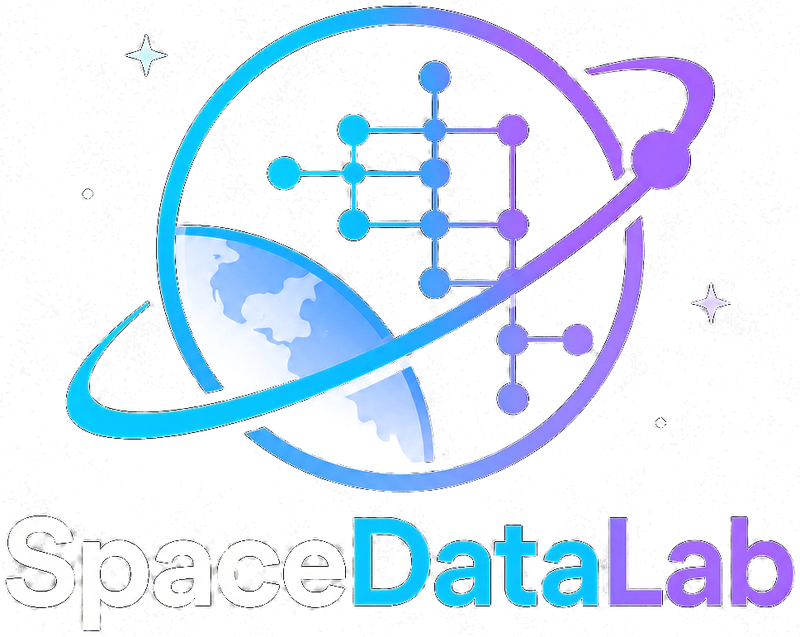

Open, verified space-data computation
Astrodynamics in Rust,
with the verification as the deliverable.
spacelab covers time scales and reference frames, SGP4, numerical and semi-analytical propagation with the full IERS 2010 force model, orbit determination, GNSS, satellite laser ranging, coverage and constellation design, and Earth-observation geometry. Mathematics decides what is correct; other codes are comparisons, never the proof.

At a glance
The whole chain, against a product nobody here produced
A seven-parameter fit to the IGS final precise orbit for 2025-01-01. Post-fit residual, in metres of real orbit.
| Third bodies | Radial | Along | Cross | 3D RMS |
|---|---|---|---|---|
| Analytic Sun + Moon (committed fixture, runs in CI) | 0.175 | 0.221 | 0.105 | 0.300 m |
| DE440 kernel | 0.054 | 0.063 | 0.045 | 0.094 m |
| Orekit 13.1.7, its own fit of the same file | 0.053 | 0.062 | 0.065 | 0.105 m |
Earth orientation, the CIO frame chain, the geopotential, luni-solar attraction, solar pressure, relativity, the variational equations and the estimator all have to be right together for that to come out small. Read the test.
≤ 250 nmSGP4 against python-sgp4 over 24 h, for the ISS. Both run Vallado's SGP4, so this pins units, epochs and frames.
≤ 0.012 µasThe CIO chain against ERFA's identical route, 1900–2100.
417 of 417Passes over 108 cells in 24 h found by 1 s brute force. The event engine needs no step: it brackets every edge and refines it to 1 ms.
Capabilities
One stack, from orbit dynamics to imagery
Use a single crate, or take them all with cargo add spacedatalab --features full.
Time & frames
Time scales and frames as types, epochs as exact nanosecond counts. The CIO frame chain with the full IAU 2000A nutation, IERS Earth-orientation data, and WGS-84 geodesy.
spacelab-framesPropagation
SGP4 for many satellites at once. Runge-Kutta, multistep, symplectic and Taylor integrators, the IERS 2010 force model, atmospheric density models, DSST, and attitude.
spacelab-propagationOrbit determination & ranging
Square-root information and Kalman-family filters, smoothers, conjunction probability, and CCSDS messages. Satellite laser ranging from CRD normal points to a modelled two-way range.
spacelab-estimationGNSS
GPS, Galileo, BeiDou, QZSS, NavIC and GLONASS broadcast orbits, RINEX 3/4 and SP3 parsing, observation processing, tropospheric mapping and DOP, with the NeQuick-G ionosphere.
spacelab-gnssConstellations & coverage
Walker, Street-of-Coverage, Flower, 2-D Lattice, kinematically-regular and Draim generators, access windows found without a time step, and H3 geodesic grids.
spacelab-constellationMission design
Universal-variable Kepler, Lambert transfers, patched conics and the circular restricted three-body problem, with JPL DE440 ephemerides for cislunar and deep space.
spacelab-astroEarth observation
RPC sensor models with bias compensation, bundle adjustment, orthorectification, stereo and multi-view surface models, atmospheric correction, and Monte Carlo radiative transfer.
spacelab-earthvisionSynthetic-aperture radar
Range-Doppler and chirp-scaling focusing, interferometry with persistent-scatterer and SBAS time series, polarimetry, tomography, and filtered back-projection.
spacelab-signalOn-board vision
Pure-Rust, no_std CNN inference with no ML framework. Trained ONNX models load through an opt-in feature.
spacelab-visionPrinciples
Built to be trusted
Correctness is the product. Every check is written down with its residual.
Mathematics decides
A formula is verified by its derivation, an exact value, or the equation that defines it. Orekit, ERFA and NEPTUNE are comparisons, published as distances.
Derived, not transcribed
From the primary literature, with the symbolic derivations committed and re-proved in Maxima on every run.
Mutation-tested
Every crate has been through cargo mutants. Each survivor is killed or argued equivalent in a ledger.
Frames are types
Epoch<Tai> is not Epoch<Ut1>, and a Rotation<Teme, Itrf> composes only with a matching frame.
Lean by design
A no_std, stack-allocated core: a degree-120 geopotential propagation holds about 0.84 MB and allocates nothing.
Full-resolution models
XGM2019e geopotential, FES2014b ocean tide to degree 100, the full IAU 2000A nutation. Truncation is the caller's choice, never the data's.
The limits are written down too: the error budget splits what the engine adds from what it inherits, and for TLE-driven work the second dominates by a factor of a thousand. See also the design, provenance and changelog.